대충 말해도 알아듣게 하는 맥락
발표자는 OpenAI 개발자 경험 팀의 도미닉 쿤델(Dominik Kundel)과 찰리 궈(Charlie Guo)예요. 2026년 11월 10일 샌프란시스코 AI Engineer Code Summit 첫날 워크숍이었어요. 찰리는 요즘 'Codex가 죽었다'는 말이 돈다며 시작해요. 답은 반대예요. 띄운 그래프에는 10월 7일 기준 Codex와 ChatGPT Work 활성 사용자 4천만 명이 적혀 있었고, 7월 9일 ChatGPT Work 출시 뒤로 선이 가파르게 올라갔다고 내레이터가 전해요.
이어서 7월부터 11월까지 낸 기능 목록을 띄워요. 왼쪽에 세로로 'Nov 2026'이 적혀 있고, GPT-5.6부터 Computer History, Ultrafast, Code Review tab, Dots, Agents API(Application Programming Interface)까지 체크 표시가 세 줄로 늘어서 있어요. 찰리는 다 넣으려니 한 화면에 안 들어가서 줄였다고 해요.
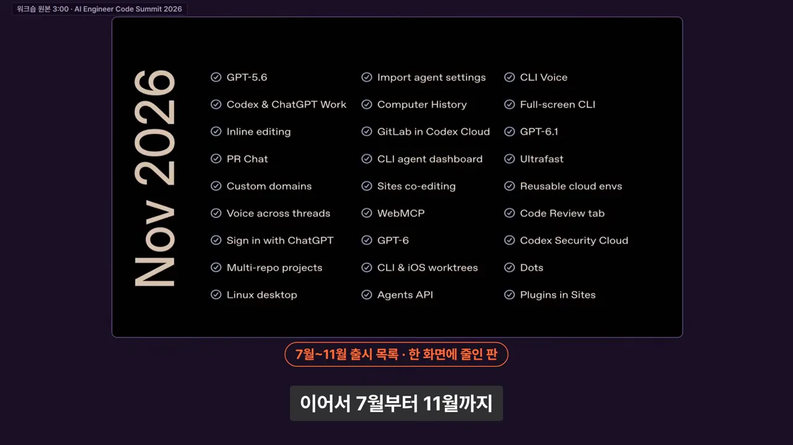
영상은 기능을 훑는 대신 두 사람이 매일 쓰면서 바꾼 일하는 방식만 골라요. 화면의 여섯 칸이 이 문서의 뼈대예요. 맥락, 반복, 어디서나, 배포, 위임, 팁이에요. 내레이터는 도구는 Codex지만 다른 코딩 에이전트에서도 통하는 원리를 따로 짚겠다고 해요.
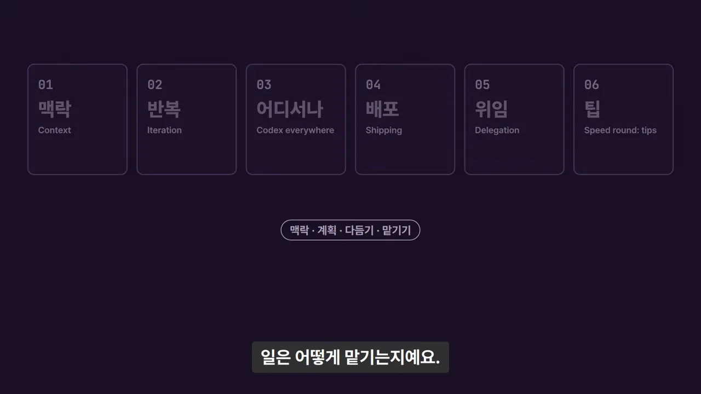
맥락 엔지니어링 대신 '대충 말하기'
도미닉은 지난 2년 동안 다들 맥락 엔지니어링을 얘기해 왔다고 말해요. 그런데 이제는 그가 '대충 말하기(vague prompting)'라 부르는 쪽으로 가고 있대요. 맥락을 이미 다 아는 동료와 말하듯 에이전트와 대화하는 거예요. 하나하나 불러 줘야 하는 동료라면 차라리 내가 하는 게 낫다는 거죠.
예로 든 메시지가 이거예요. 주황색으로 칠한 부분은 'Katia tagged me in slack', 'in my style', 'mark it as in progress in the sheet'예요. 어느 채널인지, 어느 시트인지는 한 글자도 없어요. 그래도 Codex는 슬랙과 구글 드라이브에 연결돼 있어서 그 대화와 시트를 찾아내요.
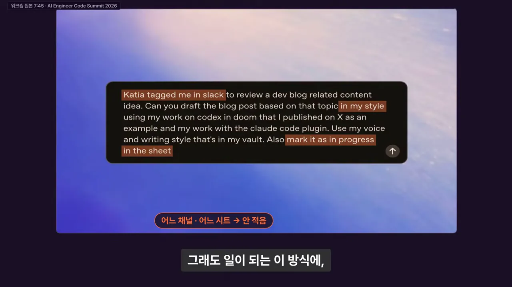
저장소 안과 저장소 밖
Codex가 맥락을 잘 모으는 이유도 설명해요. OpenAI는 거대한 모노레포에서 일하기 때문에, Codex는 처음부터 그 안에서 바늘 찾기를 잘해야 했어요. 그리고 맥락은 두 곳에 나눠 둬요. 코딩 규칙처럼 누구나 지켜야 할 표준은 AGENTS.md나 린터로 저장소 안에 둬요. 실력 있는 엔지니어가 처음 와도 실수 없이 기여할 수 있어야 하듯 에이전트도 마찬가지라는 거예요.
저장소 밖의 맥락은 플러그인으로 이어요. 화면 오른쪽이 플러그인 마켓플레이스예요. 플러그인은 MCP(Model Context Protocol) 서버, 스킬, 추가 자료를 한 묶음으로 만든 거고, 대부분 원격 MCP를 써요. 그래서 내 컴퓨터 한 대에만 묶이지 않아요.
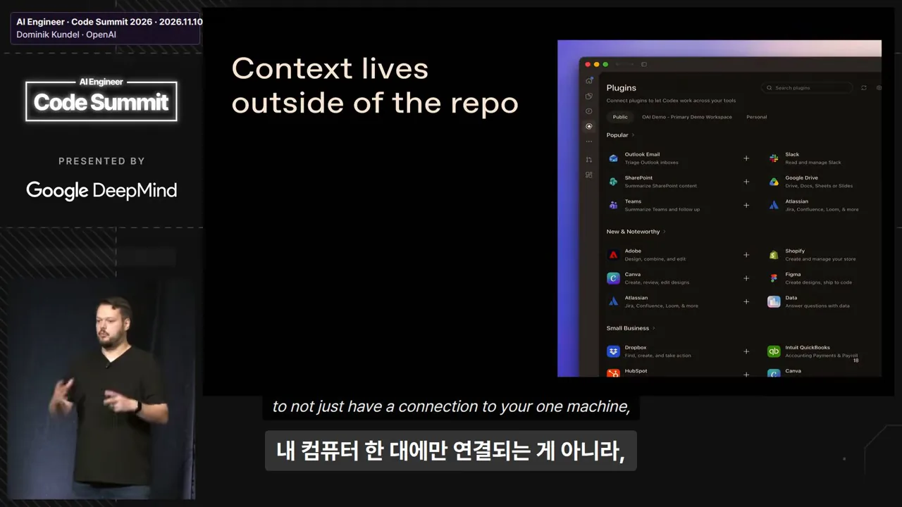
아래 그림은 이 구조를 한 장으로 옮긴 거예요. 웹의 ChatGPT에서 슬랙 플러그인을 한 번 연결하면, 개발 서버의 Codex도, 슬랙의 @ChatGPT 태그도 같은 메시지를 볼 수 있어요. 오픈소스 Codex 하네스가 이 모든 곳을 돌리기 때문이에요. 플러그인은 회사 안에서만 공유하거나 GitHub에 마켓플레이스로 공개할 수도 있어요.
내레이터는 이 대목을 두 칸으로 정리해요. 왼쪽 '저장소 안'에는 AGENTS.md와 린터, 오른쪽 '저장소 밖'에는 슬랙과 구글 드라이브가 들어가 있어요. 어떤 에이전트를 쓰든 통하는 원리라고 해요.
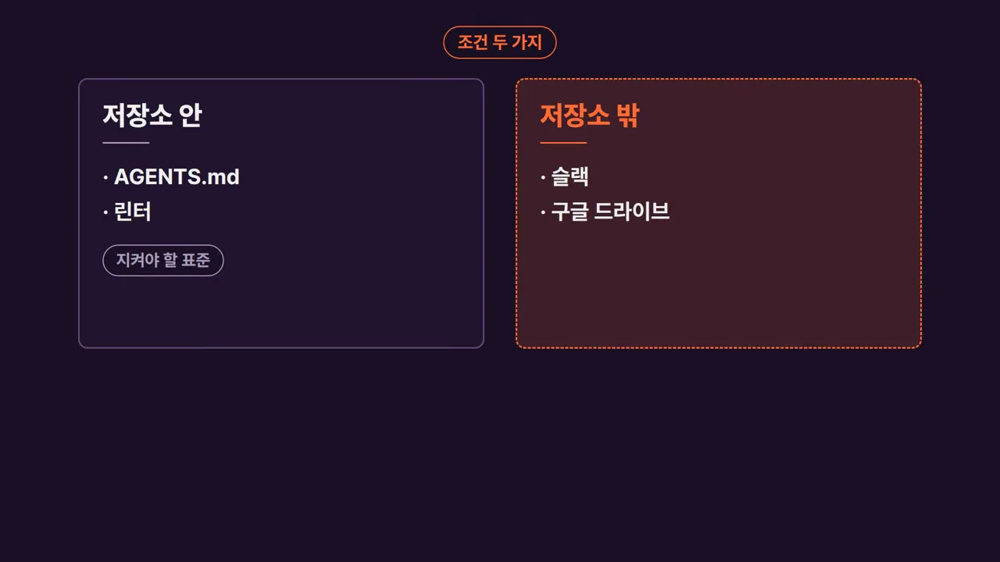
자정 배포를 맡긴 날, 그리고 앱샷
맥락이 이어져 있으면 일을 훨씬 멀리까지 맡길 수 있어요. 도미닉이 가장 좋아하는 예는 6월의 어느 일요일 자정, 문서 사이트를 업데이트해야 했던 날이에요. 그는 Codex와 함께 PR(Pull Request)을 준비한 뒤 아래 메시지를 보냈어요. 주황색으로 칠한 부분이 핵심이에요. '00:01am PT on 6/1'에 라이브가 돼야 하고, '20 min before'에 병합하면 배포가 시작되고, 승인이 안 나면 '#dx-team'에서 다른 사람을 찾고, 막판 변경이 없으면 'just deploy' 하라는 거예요.
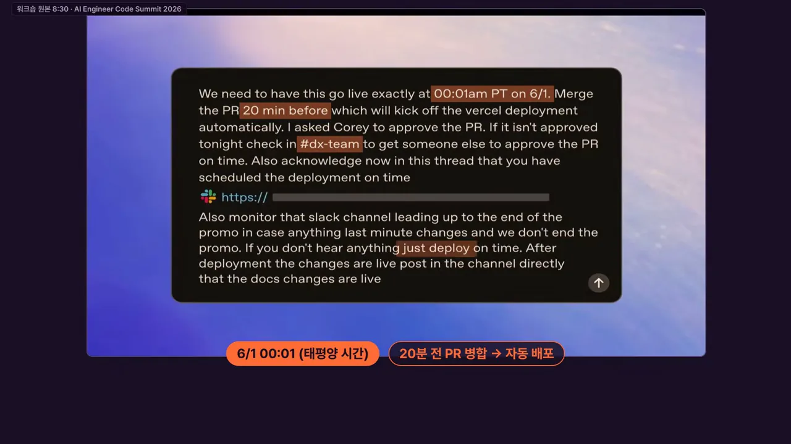
아래 그림은 메시지와 그 뒤에 일어난 일을 시간 순서로 다시 그린 거예요. 배포에 20분이 걸리던 때라 23시 41분에 병합하도록 잡혀 있었고, 0시 4분에 '라이브됐어요, 다 괜찮아요'라는 보고가 왔어요. 도미닉은 거기에 손댈 일이 거의 없었대요.
0시 4분에 올라온 보고 화면이에요. 'Developer docs changes are live'라는 문장과 PR 주소, 'Verified the removed Pro promo copy is no longer present on the production page'가 보여요. 배포만 한 게 아니라 운영 페이지에서 바뀐 내용을 직접 확인까지 했어요. 도미닉은 이 출시를 끝까지 밀고 가도록 권한을 줬기 때문이라고 해요. 다른 얘기로 새지 않고 이 일만 앞으로 밀었다는 거예요.
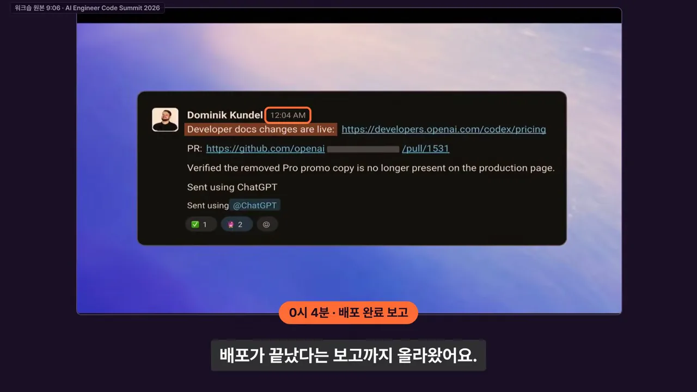
앱 화면을 넓히는 플러그인
도미닉은 플러그인으로 데스크톱 앱 화면 자체를 넓히는 기능도 보여 줘요. 왼쪽 사이드바에 'Design System'이 붙어 있고, 가운데에 버튼, 입력창, 스위치, 배지 같은 사내 디자인 시스템 컴포넌트가 나열돼 있어요. 아래 라벨처럼 이 플러그인도 프롬프트 한 번으로 만들었대요. 컴포넌트를 골라 입력창에 바로 넣을 수 있어서, Codex가 그 맥락을 따로 찾지 않아도 돼요.
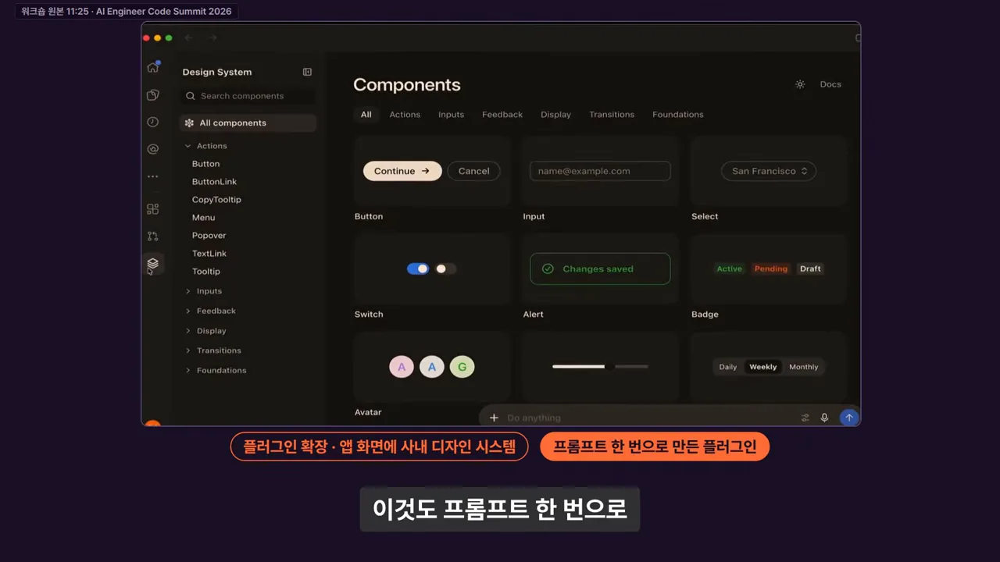
스크린샷 대신 앱샷
맥에서 화면을 캡처해 에이전트에 붙여 넣는 사람이 많아요. 그런데 아래 그림처럼 스크린샷은 테두리 안, 화면에 보이는 만큼만 담아요. 흐리게 그려진 아랫부분, 즉 스크롤 아래 대화와 페이지 밑 내용은 빠지죠. 도미닉의 제안은 이 캡처 습관을 겨냥해요.
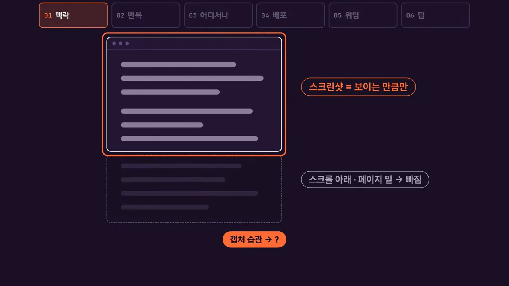
앱샷은 양쪽 Command 키를 함께 누르면 돼요(윈도우는 양쪽 Alt). 스크린샷처럼 보이지만 'View Text'를 누르면 그 화면의 접근성 트리가 텍스트로 나와요. 아래가 그 목록이에요. 'row 03.9 Track rows', 'button 03.10 Mini-player'처럼 행, 셀, 버튼이 이름과 번호까지 줄지어 있어요. 따로 챙겨 주지 않아도 훨씬 풍부한 정보가 Codex에 넘어가요.
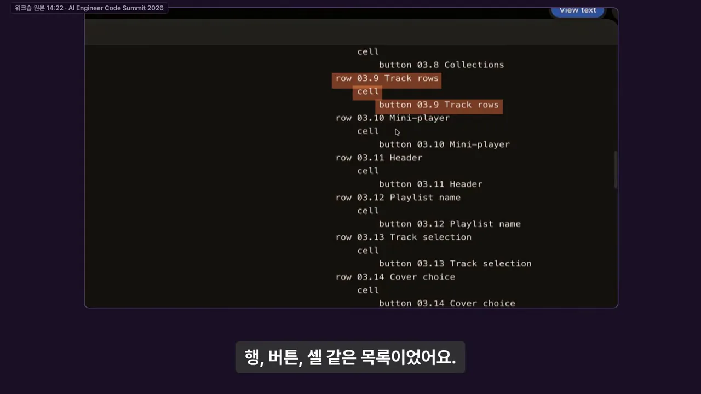
켜 두면 쌓이는 기록, 저장소 밖의 계획
플러그인이 없는 앱의 정보가 필요하면 컴퓨터 사용 기능을 써요. macOS에선 Codex가 자기 커서로 백그라운드에서 움직여서 내 화면을 빼앗지 않아요. 아래 예시에서 Codex는 'Computer test this app' 요청을 받고 iPhone 17 Pro 시뮬레이터에서 사진 앱 흐름을 확인했어요. 주황 테두리 안의 보고는 알림을 거절해도 보관함이 열리고 첫 사진이 열렸다는 내용이에요.
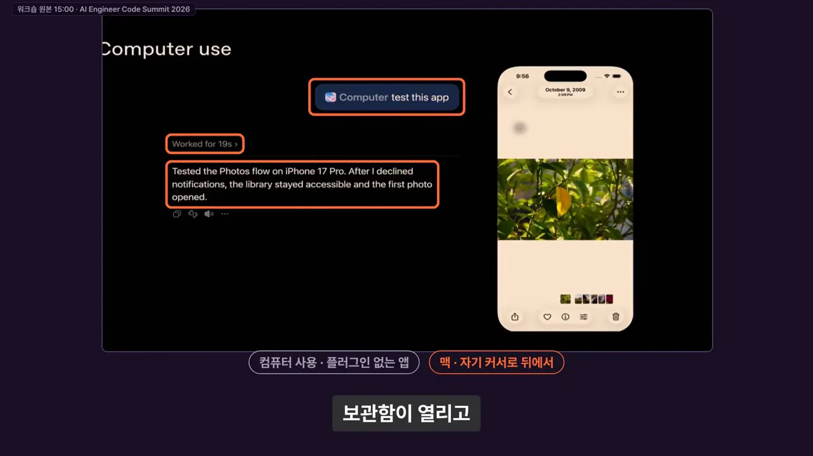
켜 두면 쌓이는 컴퓨터 기록
컴퓨터 기록(Computer History)은 아쉽게도 지금은 macOS 전용이에요. 슬라이드의 카드 세 장이 이 기능이 하는 일이에요. 하던 일 이어 가기(Pick up where you left off), 최근 작업 찾기(Find recent work), 반복하는 흐름을 스킬로 재사용하기(Reuse workflows as skills)예요.
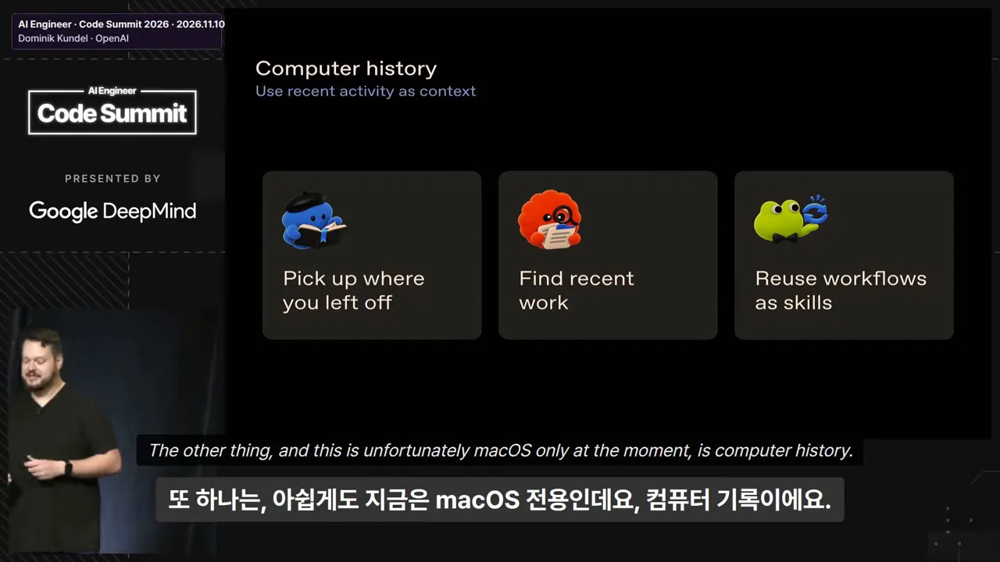
도미닉의 Codex는 그가 블로그 글을 쓸 때 늘 구글 문서에 먼저 초안을 쓴다는 걸 배웠어요. 습관을 바꿔 ChatGPT Space에 쓰기 시작하자 그것도 따라 배웠고요. 이렇게 배운 건 Codex 안의 기억이 돼서 행동을 이끌어요. "아까 보던 문서 뭐였지?"에도 답해요. 설정의 컴퓨터 기록에서 켜면, 아래처럼 시간대별 기록이 쌓여요. '워크숍 슬라이드 다듬기', '앱샷 데모 준비', '워크숍 피드백 검토' 같은 항목에 어떤 앱을 썼는지 아이콘이 붙어 있어요.
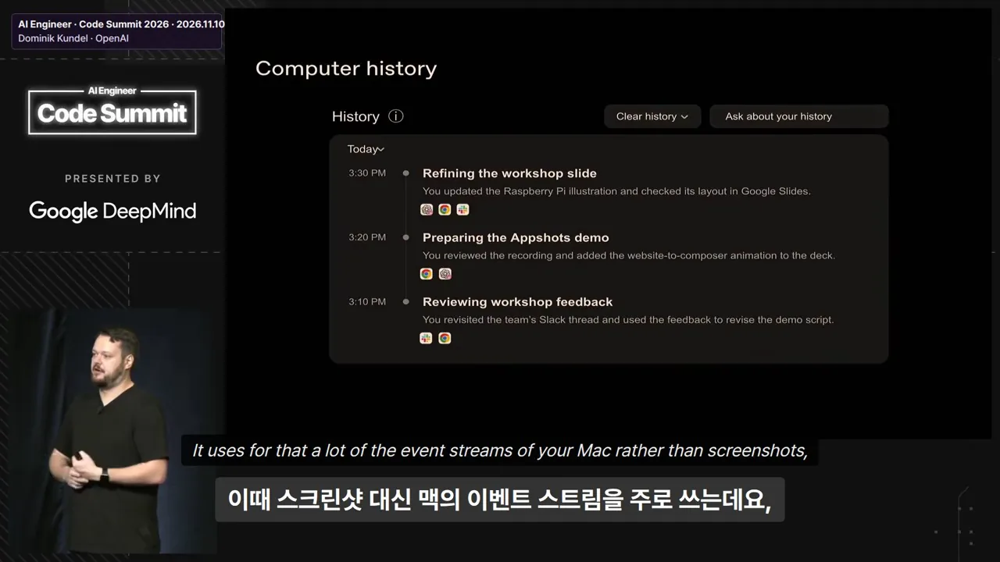
'보안은요?'라는 질문에는 세 가지로 답해요. 언제든 일시정지할 수 있고, '방금 1분'처럼 최근 기록만 골라 지울 수 있고, 특정 앱이나 사이트는 아예 빼 둘 수 있어요. 시크릿 모드 브라우징은 처음부터 빠져 있어요. 슬라이드 예시의 제외 목록에는 앱 쪽에 Spotify, 사이트 쪽에 linkedin.com과 x.com이 들어 있어요.
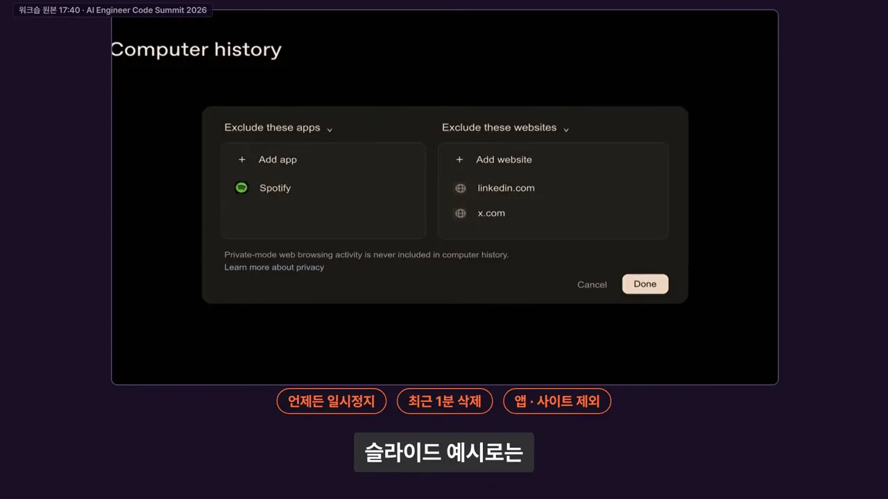
계획은 저장소 밖 공유 페이지로
맥락 이야기의 마지막은 계획이에요. 큰 기능을 만들 때 에이전트에게 계획부터 쓰게 하는 사람이 많죠. 예시 계획서 제목은 '재개 가능한 온보딩 실행 계획(ExecPlan: resumable onboarding)'이에요. 노트북에서 단계를 하다 휴대폰으로 넘어가도 이어서 하게 만드는 기능이고, 결정 기록(Decision log), 인수 테스트(Acceptance test), 구현 단계(Implementation milestones), 출시와 복구(Rollout and recovery)가 들어 있어요.
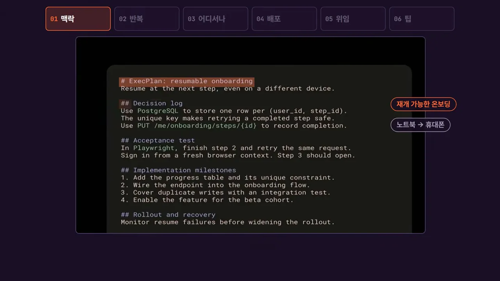
도미닉은 이런 계획을 저장소 밖으로 꺼내요. 맥락은 원래 흩어져 있기 때문이에요. 슬라이드에 떠 있는 카드들이 그 예예요. 계획(Plan), 출시 장애물(Launch blockers), architecture.md, 기능 PRD(Product Requirements Document), 고객 피드백 시트, #dogfooding-feedback 채널, 변경 기록(Changelog)이 GitHub, 구글 문서와 시트, 슬랙 같은 곳에 나뉘어 있어요.
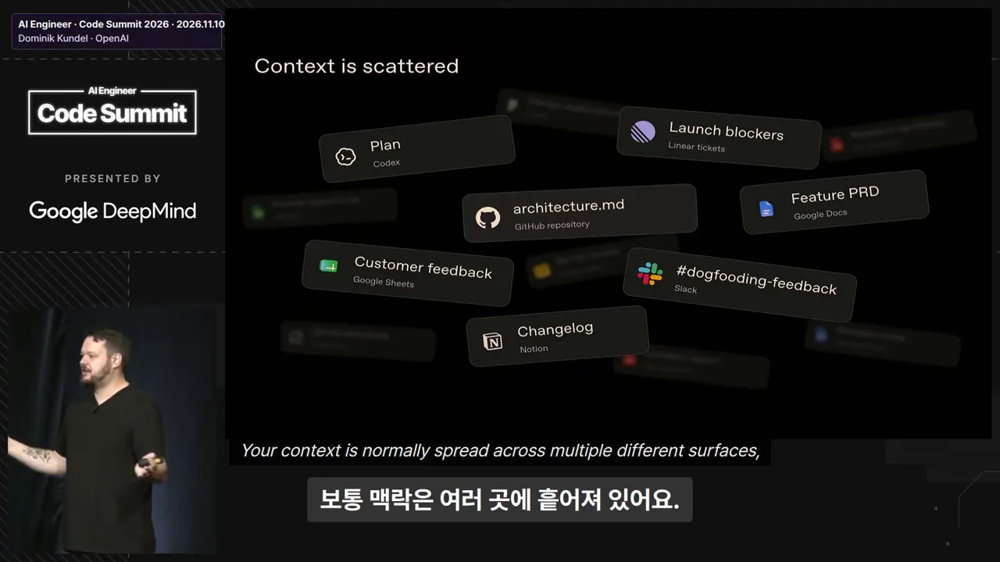
계획을 저장소에 커밋해 PR로 리뷰하면 고치고 의견 받기가 고통스러워요. 구글 문서에 복붙했다가 다시 가져오는 것도 마찬가지고요. 그래서 OpenAI는 사람과 에이전트가 함께 쓰는 ChatGPT Space를 냈어요. Codex에 '이 계획을 페이지로 만들어 줘'라고 하면 서식 있는 문서로 만들어져요. 아래 화면에서 도미닉은 결정 기록 문단을 골라 사람을 태그하려 해요. 목록에 ChatGPT, Chopper, Romain Huet, Charlie Guo가 보여요. 위쪽 'ChatGPT Thinking...' 표시는 ChatGPT가 문서를 고치는 중이라는 뜻이에요.
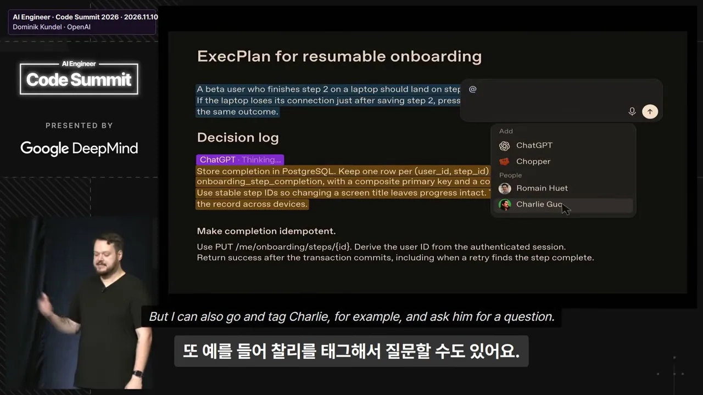
페이지마다 지침도 달 수 있어요. 아래 페이지 위쪽 'Instructions' 칸에 'Update this page every day at 9pm with the latest feedback from #alpha-feedback'이라고 적혀 있어요. 매일 밤 9시에 알파 피드백 채널의 최신 의견으로 이 페이지를 고치라는 거예요. 도미닉은 이걸 '페이지별 AGENTS.md'라고 불러요. 런북의 명령어가 바뀌었는데 문서 고치는 걸 깜빡하는 일을 막아 줘요.
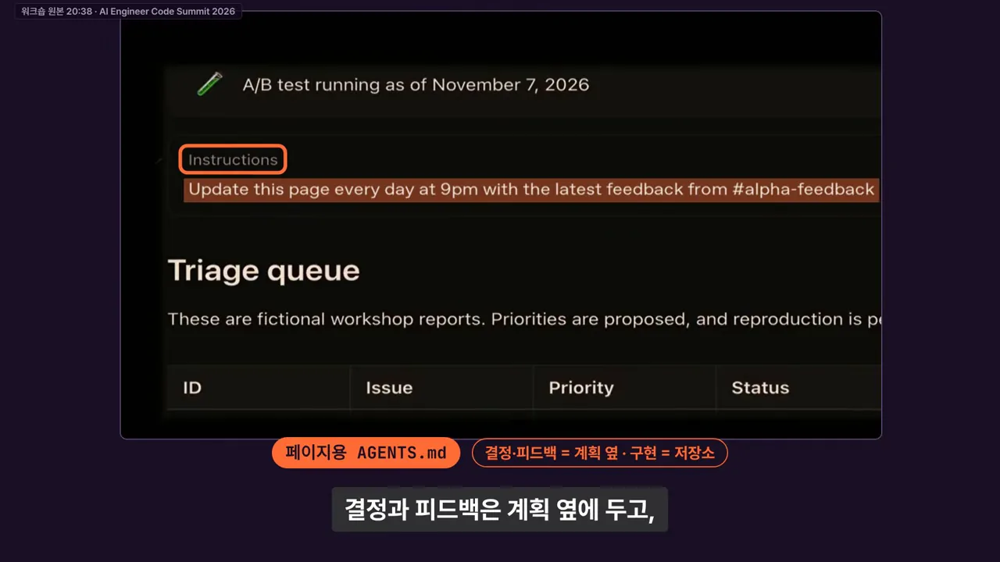
Ultrafast는 언제 켜나요?
두 번째 주제는 반복이에요. 디자이너 시안도 없이 어느 방향이 맞는지, 뭐가 맞는 느낌인지 찾아가며 다듬는 경우죠. 여기서 Ultrafast가 나와요. 슬라이드에는 'API, ChatGPT, Codex에서 쓸 수 있다'는 문장 아래 '8x faster · up to 300 tokens/second'가 주황 테두리로 강조돼 있어요. 도미닉은 GPT-6.1 Sol과 GPT-6 Astra에 쓸 수 있고, 8배 빠르지만 비용은 6배라고 해요.
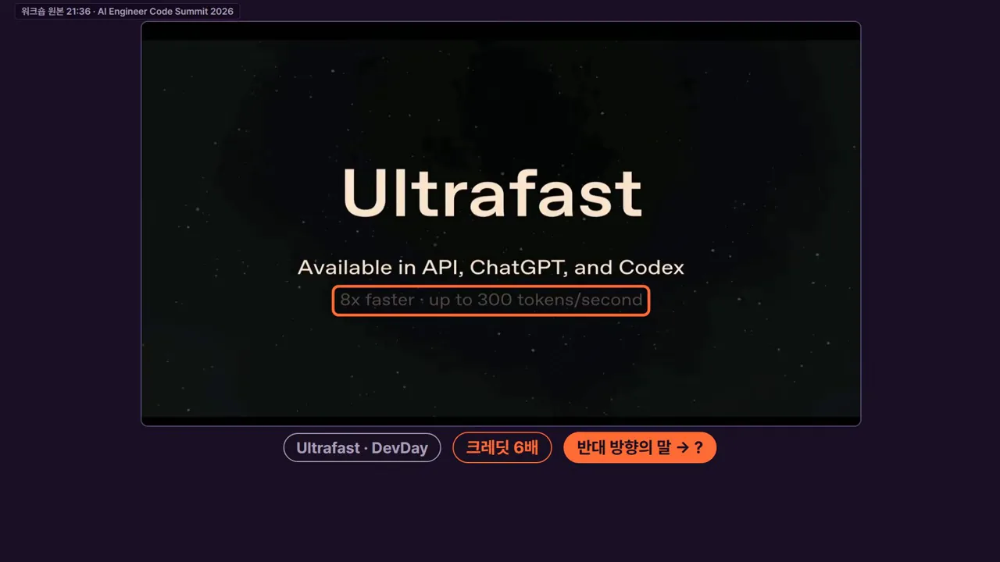
늘 켤 필요는 없어요
'전부 빠르게 해 줘'라는 마음은 이해하지만, 많은 경우 Ultrafast를 써도 실제로 빨라진 걸 못 느낀대요. 일의 대부분이 기다리는 시간이라면 생성 속도가 빨라져도 소용이 없기 때문이에요. 도미닉이 말한 기준을 표로 옮기면 이래요.
| 상황 | Ultrafast 효과 | 이유 |
|---|---|---|
| iOS 앱, 게임처럼 컴파일·엔드투엔드 테스트·검증이 시간의 절반 이상인 일 | 거의 못 느껴요 | 기다리는 시간이 대부분이에요 |
| 일을 던져 두고 자리를 뜨는 긴 작업 | 굳이 필요 없어요 | 사람이 결과를 바로 보지 않아요 |
| 옆에 붙어 앉아 아이디어를 빠르게 시도하며 UI(User Interface)를 다듬는 일 | 가장 커요 | 요청과 확인이 몇 초 단위로 오가요 |
도미닉은 에이전트에게 일을 맡기면서 아쉬워진 게 있다고 해요. 일을 던져 두고 자리를 뜨면, 같이 아이디어를 굴리며 빠르게 시도하는 창작의 흐름이 사라진다는 거예요. Ultrafast는 그 몰입(locked in)을 되찾을 때 켜요. 지금까지가 맥락을 이어 두고 맡기는 쪽이었다면, 여기서는 반대로 사람이 바짝 붙는 거예요.
주석으로 콕 집어 고치기
데모 전에 주석(annotations) 기능을 소개해요. 데스크톱 앱의 앱 안 브라우저 왼쪽 위 버튼을 누르면 페이지의 특정 부분을 골라 피드백할 수 있어요. 아래 화면은 OpenAI Motion 컴포넌트 페이지에서 설명 문장 한 줄을 파란 테두리로 고르고, 그 위에 'Add a comment...' 입력칸을 띄운 모습이에요. 작은 설정 버튼으로 글자 크기나 색 같은 값을 실시간으로 바꿔 보며 감을 잡을 수도 있어요.
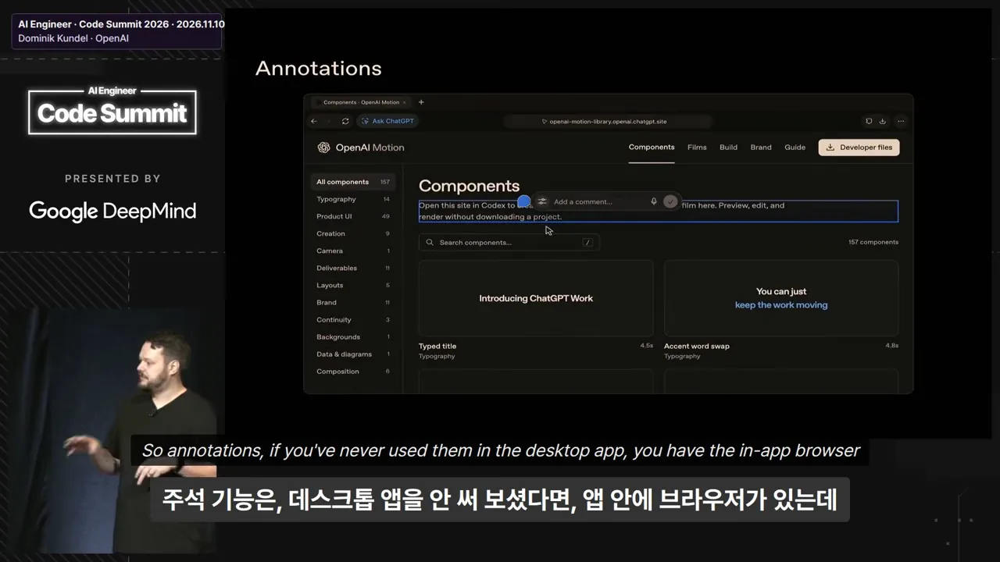
데모: 한 줄짜리 요청으로 다듬기
데모 화면 왼쪽은 Codex, 오른쪽은 앱 안 브라우저예요. 띄워 둔 건 '블라썸 뮤직(Blossom Music)'이라는 음악 앱 소개 페이지이고, 주소창에는 127.0.0.1:5173이 떠 있어요. 코드를 고치면 페이지가 바로 새로 고침되는 로컬 개발 서버예요. 도미닉은 핫 리로드되는 개발 서버가 없으면 Ultrafast의 이점이 거의 없다고 해요.
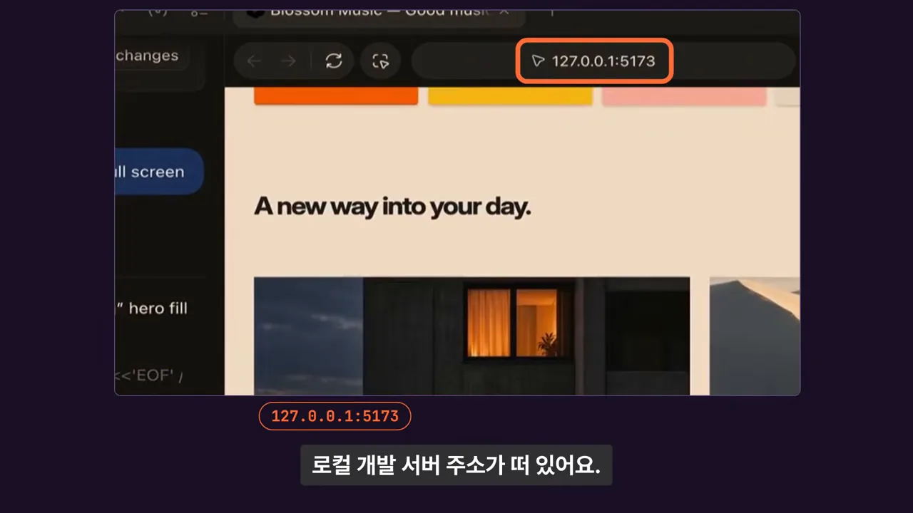
둘째 조건은 추론 강도를 낮추는 거예요. 아래 화면 아래쪽 모델 칸에서 도미닉이 강도를 고르고 있어요. 모델은 GPT-6.1 Sol, 강도는 light예요. 그보다 높아도 되지만 Ultrafast의 '마법 같은 순간'은 못 본대요. 복잡하거나 미묘한 일만 high로 올리고, 대부분은 light로 둔다고 해요. 오른쪽 페이지에는 아직 'Good music. Great company.' 헤더가 남아 있어요.
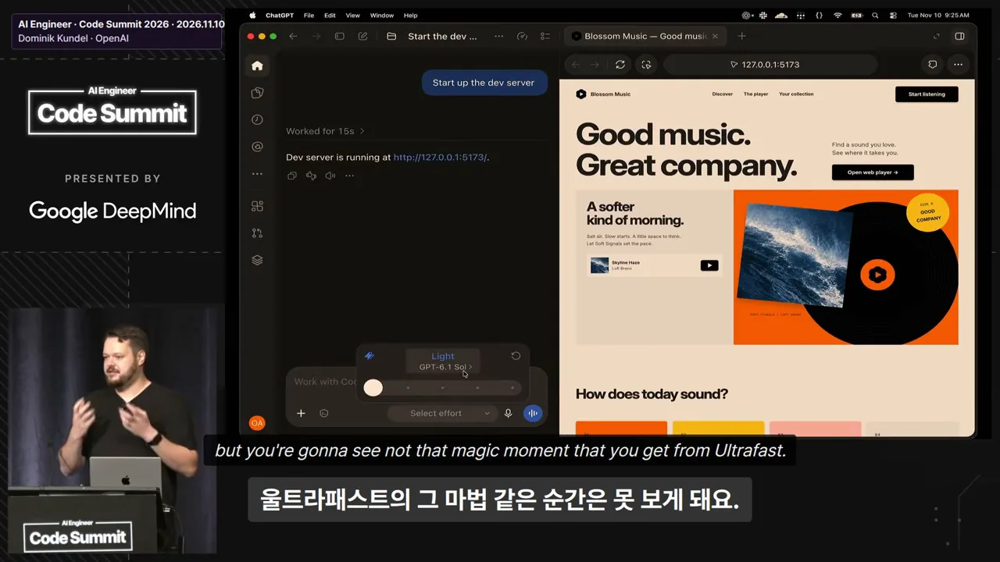
셋째는 요청을 아주 작게 주는 거예요. 'Good music. Great company. 헤더 빼 줘', '다른 헤더는 전체 화면으로', '아니, 가로만 꽉 채우고 나머진 보통으로'처럼요. 첫 작업은 파일 몇 개를 읽느라 조금 걸리지만, 그다음부턴 쓰는 시간이 실행 시간보다 길 만큼 빨라요. 도미닉은 의자에 기대 음성 받아쓰기로 '배경 애니메이션 넣어 줘', 'LP를 진짜 바이닐처럼 보이고 돌게 해 줘'를 이어서 던져요. 아래 화면 왼쪽 기록을 위에서부터 보면, '가로만 꽉 채우고 나머진 보통으로'는 5초 만에 끝났어요. 그 아래 'add some background animations' 요청 뒤에는 홈, 반사광, 가운데 라벨, 계속 도는 회전을 넣었다는 22초짜리 보고가 있어요. 오른쪽 LP(Long Play record)에 실제로 홈과 'BLOSSOM' 라벨이 생겼어요.
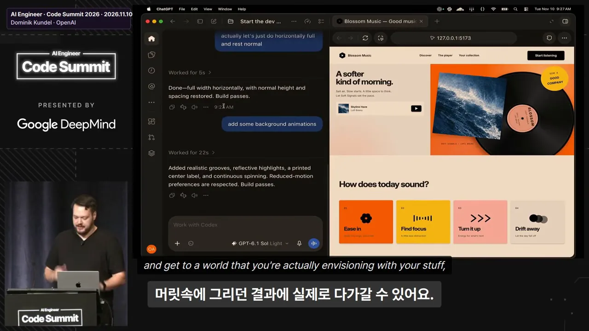
내레이터는 데모의 결과를 그림으로 정리해요. LP는 돌기 시작했고 커서로 스크래치까지 됐어요. 요청 하나에 5초, 10초 정도였어요. 도미닉은 DevDay 전날 밤 ChatGPT Space 문서 페이지의 기능 소개를 더 눈길 가게 다듬을 때도 이렇게 했대요. 그 애니메이션은 영상이 아니라 모두 HTML(HyperText Markup Language)이고, 원하는 게 뭔지 확실하지 않아서 요청을 쌓아 가며 더듬어 찾았다고 해요.
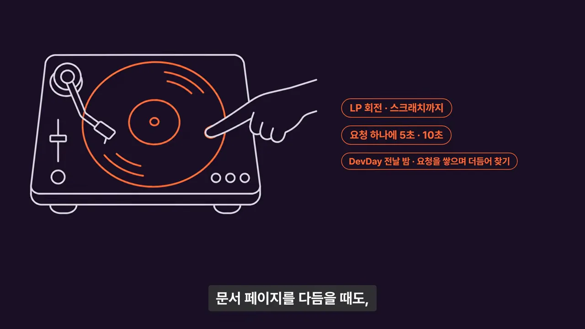
영상은 이 대목을 세 줄로 정리해요. 추론 강도는 낮게, 요청은 작게 하나씩, 바로 보이는 미리보기. 빠른 모델이 없어도, 다른 도구에서도 그대로 가져갈 수 있는 원칙이에요.
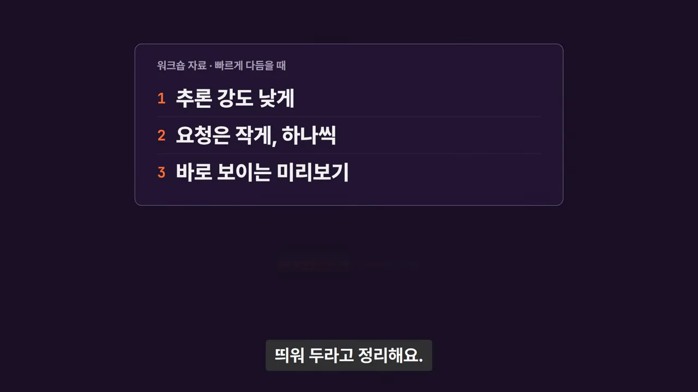
노트북을 덮어도 도는 작업
세 번째 주제는 어디서나 일하기예요. 에이전트가 몇 시간, 며칠씩 혼자 일하게 되면서 노트북을 닫으면 일도 멈추는 문제가 생겼어요. 도미닉은 다들 비슷한 걸 사들였다고 말해요. 슬라이드의 세 가지가 그거예요. 맥 미니, 라즈베리 파이, VPS(Virtual Private Server)나 개발 서버(devbox)예요. 각각 아래에 설치(Setup), 업데이트(Updates), 디스크 용량(Disk space)이라는 꼬리표가 붙어 있어요.
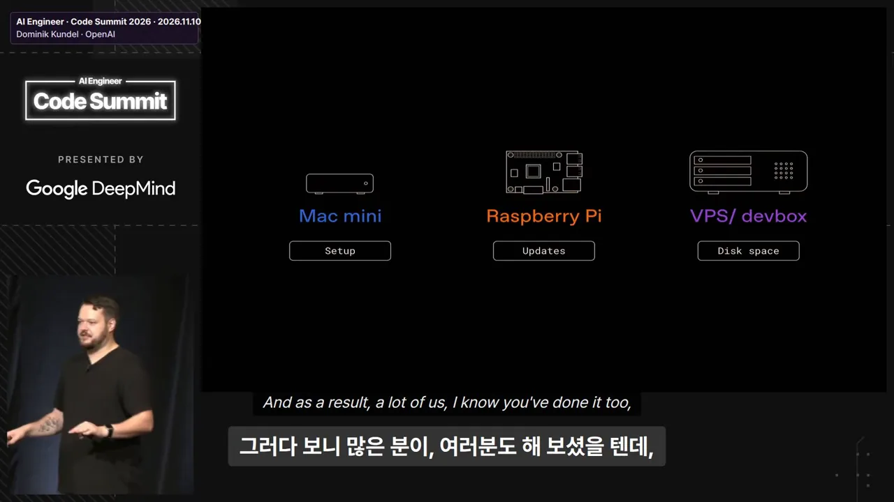
꼬리표가 곧 문제예요. 기기를 다 세팅하고 업데이트를 챙겨야 하고, 돌리는 작업이 늘면 컴퓨트와 디스크가 모자라 계속 늘려야 해요. 두 방식을 나란히 놓으면 이래요.
| 방식 | 누가 챙기나요 | 영상이 짚은 점 |
|---|---|---|
| 책상 밑 맥 미니, 남는 노트북, 빌린 VPS | 내가 직접 | 설치, 업데이트, 컴퓨트·디스크 부족을 계속 챙겨야 해요 |
| Codex Cloud 환경 | Codex가 설정하고 OpenAI가 호스팅 | 저장소를 고르면 의존성·명령까지 Codex가 찾아요. 지금은 리눅스 VM(Virtual Machine)이에요 |
Codex Cloud V2: 저장소 여러 개를 한 환경에
Codex Cloud는 작년 5월쯤 낸 첫 큰 제품이었는데, 이번에 V2로 새로 고쳤대요. 입력창에서 바로 새 환경을 띄우고, 회사 안에서 공유하거나 혼자 쓸 수 있어요. 아래 화면이 환경을 만드는 창이에요. 'Select repositories' 목록에서 blossom-music-mobile과 blossom-music 두 개에 체크돼 있고, 아래에 '2 selected'가 보여요. 저장소를 여러 개 동시에 고를 수 있게 된 게 이번에 바뀐 점이에요.
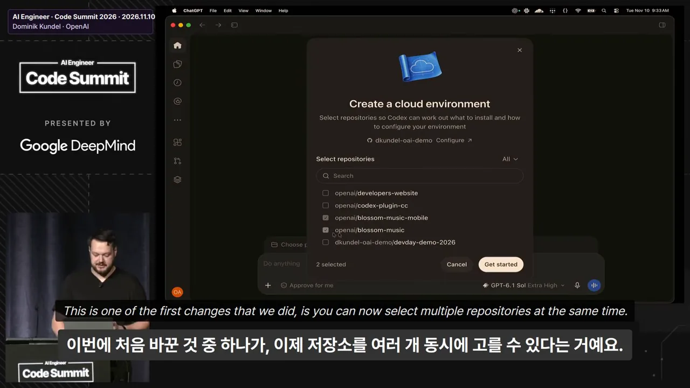
환경은 저장소들을 클론한 VM이에요. 여기에 더해 Codex가 일에 필요한 걸 스스로 찾아요. 필요한 API 키, 설치할 의존성, 개발 서버를 띄우고 테스트를 돌리는 명령이에요. 예전엔 이걸 다 손으로 했어요. 지금도 고칠 수는 있지만, 기본으로는 Codex가 알아서 시작해요.
아래는 그 결과 보고예요. 두 저장소 모두 깨끗하고 Node와 npm, GitHub 접근도 된다고 한 뒤, 주황색으로 칠한 부분에 'iOS simulator requires macOS and Xcode'라고 적었어요. 리눅스 VM에선 iOS 시뮬레이터를 돌릴 수 없다는 거예요. 도미닉은 아래 파란 칸에서 '지금은 그 부분 필요 없고, 웹사이트만 돌리면 된다'고 답했고, 환경이 게시(Environment published)됐어요.
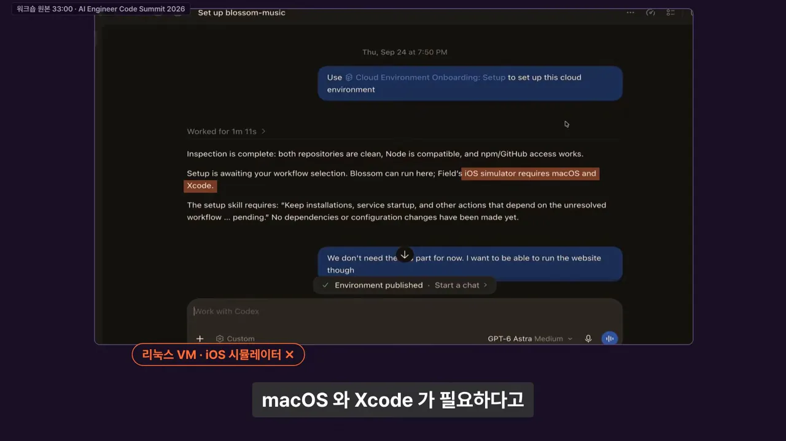
이렇게 만든 환경은 스냅샷으로 저장되고 계속 갱신돼요. 그래서 몇 시간 손대지 않다가 새 일을 줘도 바로 시작해요. 웹 접근을 열지, 비밀값을 저장할지, 팀과 공유할지도 설정해요. 공개 인터넷에 없는 사내 자원은 OIDC(OpenID Connect)나 Tailscale로 연결해요. 자기 하드웨어(예: 클라우드 맥)를 붙이는 기능도 만들고 있대요.
데스크톱 앱 없이 휴대폰에서 이어 쓰기
데스크톱 앱을 깔 수 없는 개발 서버라면 Codex CLI(Command Line Interface)만 있으면 돼요. 아래 터미널에서 'codex remote-control --help'를 치면 첫 줄에 '[experimental] Manage the app-server daemon with remote control enabled'가 나와요. 하위 명령은 start, stop, pair, help예요. `codex remote-control start`로 앱 서버를 띄우면 휴대폰의 ChatGPT 앱에서 그 서버의 Codex를 이어서 쓸 수 있어요.
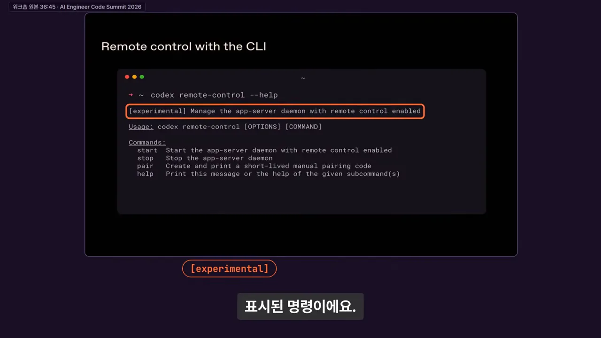
만든 걸 내보내기: Sites와 Cutroom
여기서 발표자가 찰리로 바뀌어요. 네 번째 주제는 배포, 즉 만든 걸 사람들이 쓰거나 검토할 수 있게 내보내는 일이에요. 찰리가 꺼낸 건 ChatGPT Sites예요. 대화로 웹사이트나 웹 앱을 만들고 호스팅까지 하는 기능이죠. 찰리는 ChatGPT와 Codex에서 가장 강력한데 잘 안 알려진 기능이라고 해요.
Cutroom: 메모를 달면 에이전트가 새 컷을 만들어요
예시는 팀이 거의 매일 쓴다는 사내 사이트 Cutroom이에요. 개발자 경험 팀은 문서와 발표뿐 아니라 출시 영상도 만들어요. 촬영이 끝나면 영상 담당자가 촬영본을 올리고, 팀은 이 화면에서 영상을 훑으며 댓글을 달고 화면 녹화나 B롤을 올려요. 오른쪽 메모 칸을 보면 'Dani Bauer'와 'Charlie Guo'의 메모가 줄지어 있고, 메모마다 00:06:21, 00:23:12 같은 영상 시각이 주황 테두리로 강조돼 있어요.
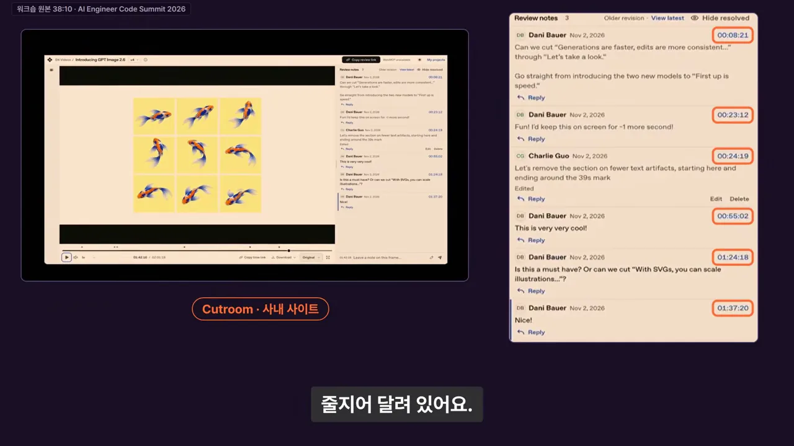
검토 준비가 됐다고 표시하면 모든 걸 원격에서 도는 Codex 에이전트에게 넘겨요. 이 에이전트는 다빈치 리졸브와 여러 영상 편집 스킬을 쓸 수 있어서, 혼자 새 컷을 만들어 다시 올리고 '다음 버전 검토할 준비 됐어요'라고 알려요. 찰리는 많은 출시 자료에서 영상 편집을 거의 다 자동화해 가는 중이라고 해요. 메인 출시 영상은 아니지만, GPT-6 Astra 출시 때 보조 영상 여러 편을 이 흐름으로 Astra가 끝까지 편집했대요.
정적 페이지만 올리는 곳이 아니에요
찰리는 사람들이 Sites를 정적인 페이지를 올리는 곳으로만 알아서 과소평가한다고 해요. 'How Sites work' 슬라이드가 그 안을 보여 줘요. 브라우저 아래 사이트 앱이 있고, 그 밑에 네 칸이 붙어요. 관계형 데이터베이스 D1, 파일·오브젝트 저장소 R2, 인증(Authentication), 플러그인(Plugins)이에요. 아래 라벨에는 '+ 방문 분석'과 '다음 판 Cutroom · 구글 캘린더로 촬영 공간 예약'도 적혀 있어요.
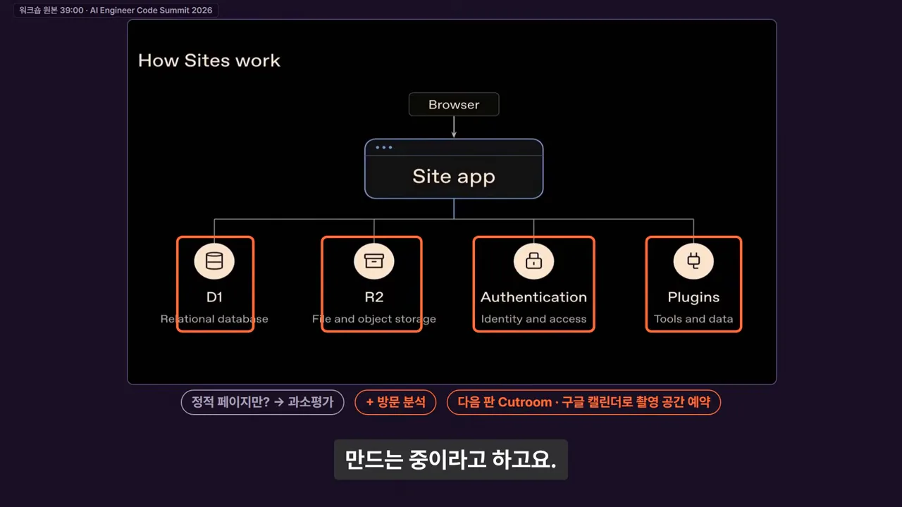
찰리가 특히 좋아하는 건 'ChatGPT로 로그인'이에요. 작은 사이트를 만들 때마다 인증을 직접 짜거나 프레임워크 플러그인을 붙이다 권한과 팀 설정에서 헤매기 마련인데, Sites는 이게 처음부터 들어 있어요. 특정 사용자에게만 기능을 열거나 앱 전체를 숨길 수 있어요.
사내에선 쓰임새도 다양해요. 아래 슬라이드 왼쪽은 커뮤니케이션 팀이 출시 회고를 8비트 게임처럼 꾸민 'GPT-RED' 사이트, 가운데는 소셜 팀이 게시물 성과를 아이폰 화면처럼 넘겨 보게 만든 사이트예요. 내레이터는 맨 오른쪽 라벨처럼, 이 채널도 편집을 에이전트에게 나눠 맡기는데 검토 메모를 영상 시각에 붙여 받는 화면이 바로 가져올 만한 부분이었다고 해요.
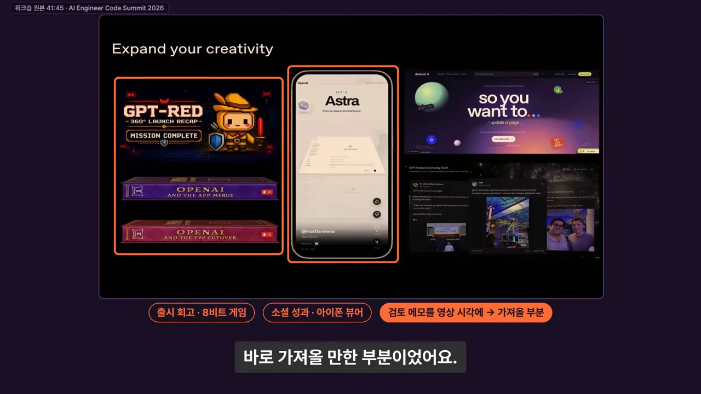
음성은 제어판, 닷은 늘 켜진 동료
다섯 번째 큰 주제는 위임이에요. 찰리는 올해 초만 해도 하위 에이전트를 조금 건드려 보는 정도였는데, 이제 Codex 안에서, 또 Codex를 넘나들며 맡기는 방법이 많아졌다고 해요. 먼저 꺼낸 건 Codex 음성 모드예요.
음성은 받아쓰기가 아니라 제어판
음성으로 코딩한다고 하면 보통 키보드 대신 말로 받아쓰는 걸 떠올리죠. 음성 모드도 그렇게 쓸 수 있어요. 그런데 찰리는 이걸 앱 전체를 부리는 제어판으로 써요. 사람이 앱에서 할 수 있는 건 거의 다 음성 모드가 대신해요. 아래 슬라이드 제목이 'One conversation, multiple threads'예요. 가운데 둥근 음성 아이콘 하나에서 'Cutroom review', 'Test reviewer access', 'Verify export flow' 세 스레드가 뻗어 나가요.
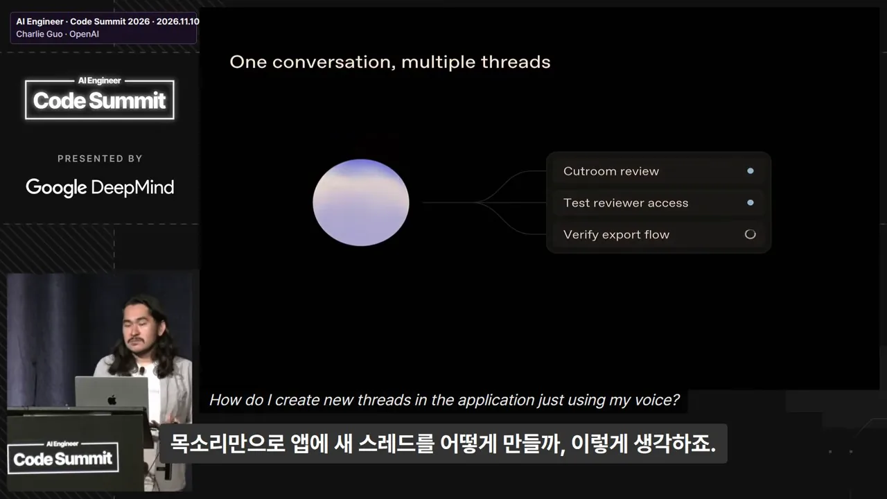
시연에서 찰리는 Codex에 전화를 걸어요. 무대 음향 문제로 잠깐 끊겼다가 다시 이어진 뒤, 한 호흡에 요청 네 개를 섞어요. 아까 걸어 둔 PR 리뷰 확인하기, 슬랙에서 매트의 최근 소식 알려 주기, 새 스레드에서 AIE(AI Engineer) 발표 슬라이드를 열고 디자인 비평하기, 끝나면 그 스레드 고정하기예요. Codex는 '정리해서 짧게 할게요'라고 답하고 뒤에서 여러 채팅을 오가며 일해요. 매트가 네 명이라 누구를 말하는지 되물었고, 새 스레드를 여는 요청엔 지금 설정에선 안 된다는 답이 화면에 떴어요. 시간이 없어 결과까지는 기다리지 않았어요.
찰리는 음성이 꼭 대답할 필요도 없다고 해요. 슬라이드의 따옴표 문장이 '다음 다섯 개 보여 줘. 말은 안 해도 돼'예요. 오른쪽 목록 다섯 줄은 공유 컷 열기, 검토자 접근 확인, 최신 버전 재생, 시각 메모 남기기, 맞는 프레임에서 다시 열기예요. 맨 아래 'On screen'처럼, 결과는 말이 아니라 화면에서만 처리돼요.
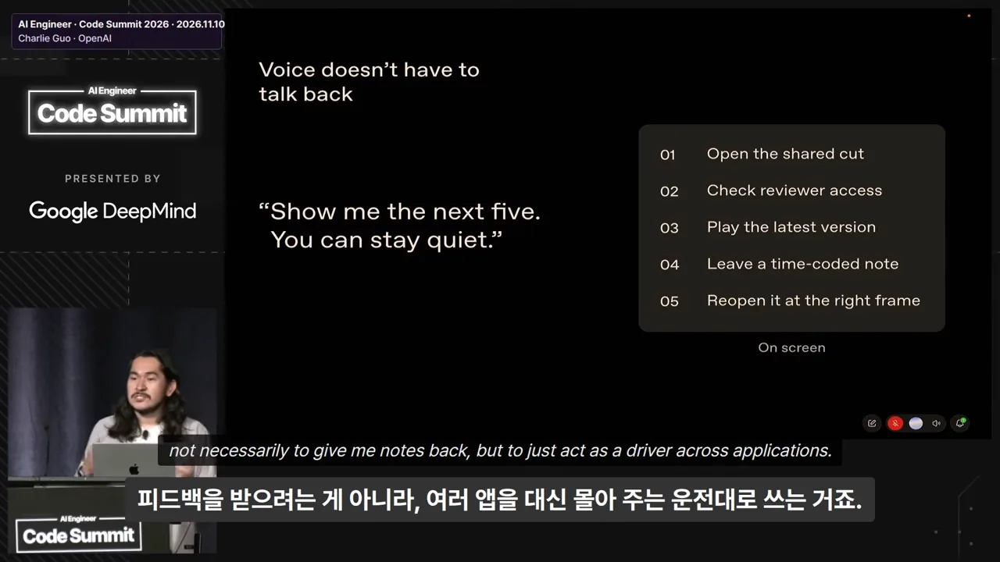
Ultrafast를 켜 두고 말로만 지시하면 변경이 들어오고 일은 뒤에서 나뉘어 돌아가요. '이거 띄워 줘, 저거 옮겨 줘'처럼 화면을 정리하게 할 수도 있어요. 찰리는 아이언맨이 자비스와 일하는 기분이라고 해요.
늘 켜져 있는 에이전트, 닷
다음은 닷(Dots)이에요. 자기 컴퓨터를 따로 갖고 늘 켜져 있는 개인 에이전트예요. 찰리가 소개하며 처음 꺼낸 말은 칭찬보다 고백에 가까워요. Codex 헤비 유저에게 닷은 좀 어색하다는 거예요. 새로운 방식이라 잘하는 일이 Codex와 다르기 때문이에요. 그래서 그는 닷을 세 가지로 써요.
| 쓰임 | 어떻게 쓰나요 | 영상 속 예 |
|---|---|---|
| 안전망 | 시키지 않아도 먼저 알려 줘요 | 내보내려던 PR의 버그, 병합 충돌, 동료의 PR이 낡았다는 사실, 발표 대기 시간과 겹친 일대일 면담, 퇴근길에 영향을 줄 언덕 화재 |
| 위임함 | 메시지를 계속 넘기며 일을 맡겨요 | 슬랙 메시지를 전달하며 '이거 알아봐', '할 일로 만들어' |
| 어디서나 | 일하는 곳 어디에서든 불러요 | ChatGPT 앱, 슬랙, Teams, 전화, iMessage·RCS(Rich Communication Services) 문자 |
'안전망' 슬라이드의 카드들이 두 사람의 닷이 실제로 보낸 알림이에요. 왼쪽 첫 카드는 PR이 아직 병합 전이라 고칠 시간이 있다는 알림, 둘째는 다른 PR과 병합 충돌이 있다는 알림, 셋째는 다음 날 AIE 발표 대기 시간과 일대일 면담이 겹친다는 알림이에요. 오른쪽 카드들은 버클리 언덕의 작은 화재 소식이에요. 찰리는 이런 건 보통의 Codex가 해 주지 않는 일이라고 해요.
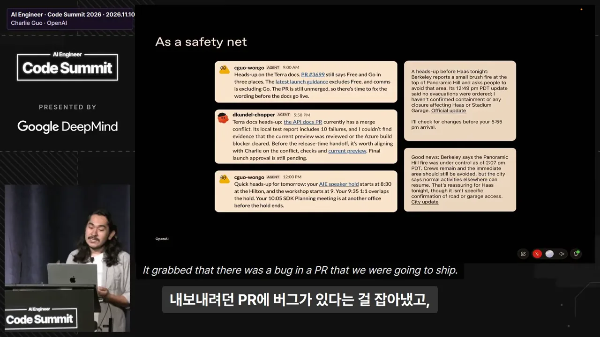
두 번째는 위임함이에요. 찰리는 슬랙에 닷을 연결해 두고, 하루 종일 메시지를 계속 닷에게 전달해요. 아래 화면은 찰리의 닷(cguo-wongo)과 나눈 슬랙 DM(Direct Message)이에요. 맨 위에는 닷이 보낸 아침 정리(문서 업데이트, 데모 녹화, 오늘 일정)가 있어요. 그 아래 찰리가 동료의 질문 'quickstart에 복사해 붙일 예제를 넣을 수 있나요?'를 그대로 전달하고, 다른 스레드는 '고쳐졌는지 확인하고, 아니면 PR을 만들어'라며 넘겨요. 가상 동료나 직속 부하에게 일을 넘기듯 쓰는 거예요.
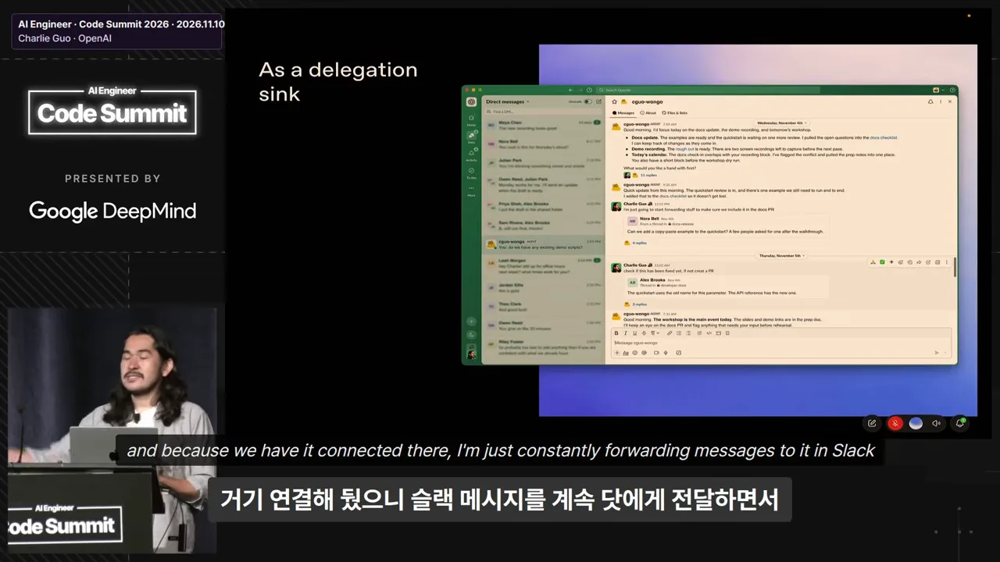
세 번째는 어디서나예요. 'Everywhere you work' 그림 가운데 'Your dot'이 있고, 그 둘레에 ChatGPT 데스크톱·웹, ChatGPT 모바일(메시지나 전화), 슬랙, Microsoft Teams, 문자(iMessage / RCS)가 붙어 있어요. 최대한 많은 곳에 닷이 있게 하려는 거예요.
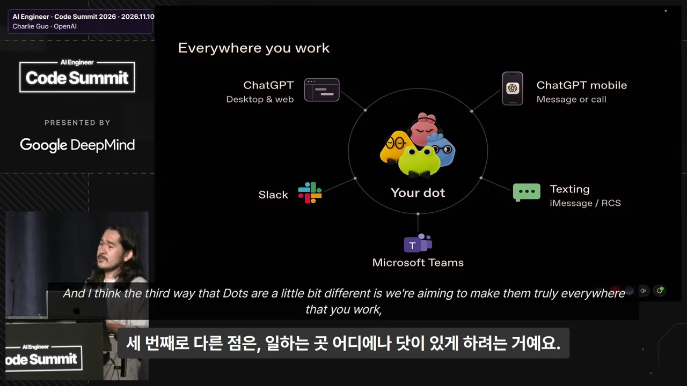
추론 강도를 낮추고, 습관에 정들지 않기
위임 이야기 끝에 영상은 같은 하네스를 내 제품 안에 넣는 Agents API(베타)도 짧게 짚어요. 그리고 마지막 여섯 번째, 도미닉의 빠른 팁으로 넘어가요.
팁 1: 강도를 낮춰요
추론 강도 슬라이더는 오른쪽 끝 Ultra까지 올라가요. 효과까지 예쁘면 끝까지 밀고 싶어지죠. 그런데 도미닉은 대부분의 일엔 high가 좋은 출발점이라고 해요. 아래 슬라이드가 그 권장값이에요. 모델 칸에 'High · GPT-6 Astra'가 적혀 있고, 손잡이가 가운데쯤에 있어요.
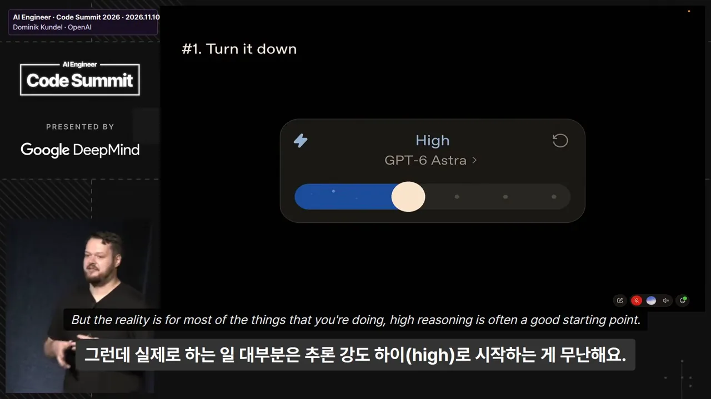
예전에 extra high에 고정해 뒀다면, 새 모델이 나올 때 high로 한 칸 내려 보고 그래도 되는지 보라고 해요. 모델은 점점 좋아지지만, 최고 단계로 올린다고 더 얻는 건 아니에요. 수확 체감이 오거나, 문제를 지나치게 오래 생각하기도 해요.
팁 2: 에이전트가 도움을 청하게 해요
어떤 모델과 강도를 고를지 막막하면 에이전트에게 맡기라고 해요. 아래 그림이 그 구성이에요. 가운데 Sol이 핵심 작업(Core work), 왼쪽 Luna가 보조 작업(Supporting tasks), 오른쪽 Astra가 계속 조언하는 역할(Continuing adviser)이에요. 아래 라벨처럼 기본은 Sol을 medium으로 두고, 막히면 Astra를 high로 불러 물어요. 손이 많이 가는 단순 작업은 Luna 하위 에이전트를 high로 여럿 띄워요.
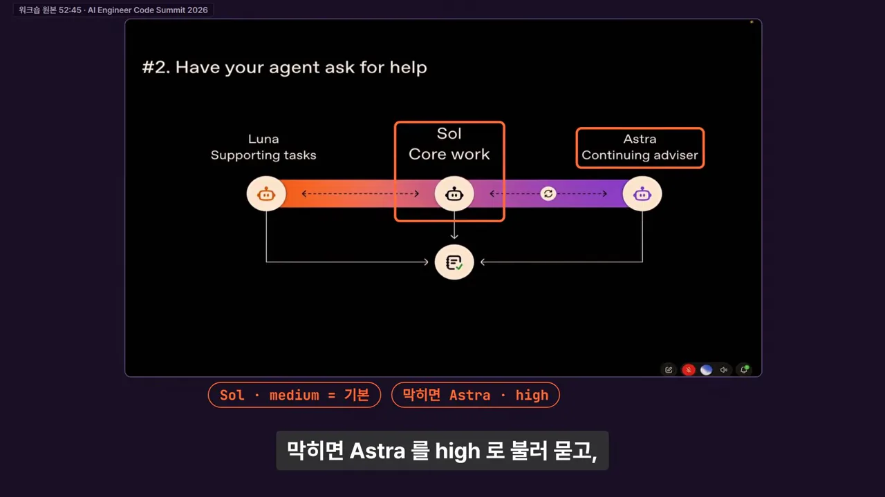
도미닉은 이걸 coordinate라는 작은 스킬로 만들어 둬요. 아래가 스킬 본문이에요. 서로 독립적인 일은 결과와 담당이 분명한 병렬 하위 에이전트 갈래로 나누고, 의존 관계는 해당 에이전트에게 직접 메시지로 풀게 하고, 결과가 바뀌거나 스스로 못 풀면 보고하게 하고, 마지막에 합쳐서 결과를 확인하라는 내용이에요.
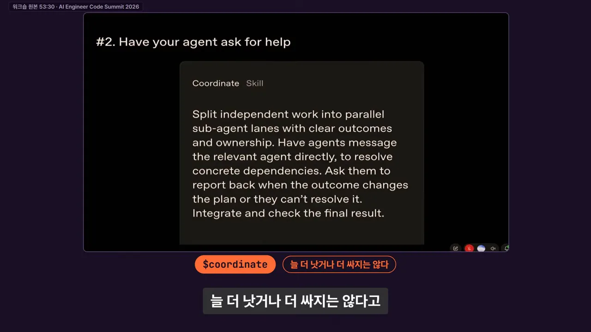
그 밖의 팁
내레이터는 나머지 팁을 오른쪽 라벨로 묶어요. 웹 앱과 모바일 앱처럼 일은 나뉘지만 백엔드를 함께 쓰는 경우엔 짝 에이전트를 띄워 공유 부분을 바꿀 때 서로 직접 상의하게 해요. 슬라이드의 Manager 스킬이 그 지시문이에요. 이어서 Codex가 독립 스레드를 띄우는 '스레드가 스레드를', CLI의 에이전트 목록과 음성 모드, 단축키가 나와요. 마지막 라벨은 '마지막 말 → ?'이에요.
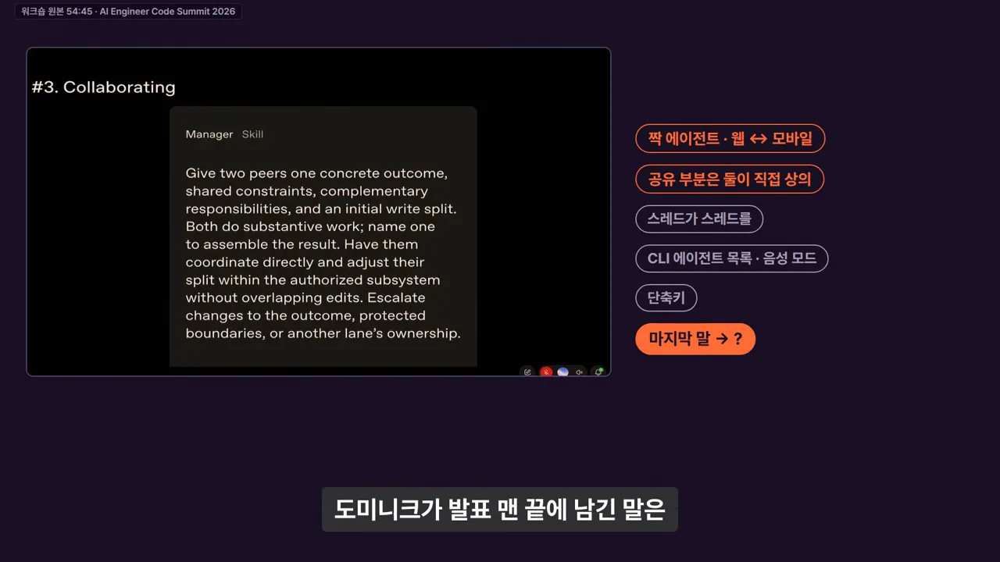
사용법에 정들지 마세요
도미닉이 발표 맨 끝에 남긴 말은 지금 쓰는 방식에 너무 정들지 말라는 거예요. 모든 게 계속 바뀌고, 새 모델과 새 기능이 나와요. 새 모델이 나올 때마다 해 오던 방식을 버리고 없이도 더 잘 되는지 해 보고, 그래도 막히는 것만 되살리라고 해요.
Every time a new model comes out, consider like abandoning the things that you've been doing so far.
새 모델이 나올 때마다 지금까지 해 오던 방식을 버리는 걸 고려해 보세요.
— 영상 42:10
영상의 마지막 화면은 여섯 갈래 목차 아래 공구 선반을 그려 두고, '그 습관들까지 · 새 모델 앞에서 다시 시험'이라고 적어요. 앞에서 정리한 규칙과 맥락, 추론 강도와 모델 조합까지 모두 새 모델 앞에서는 한 번씩 다시 시험해 보라는 거예요.
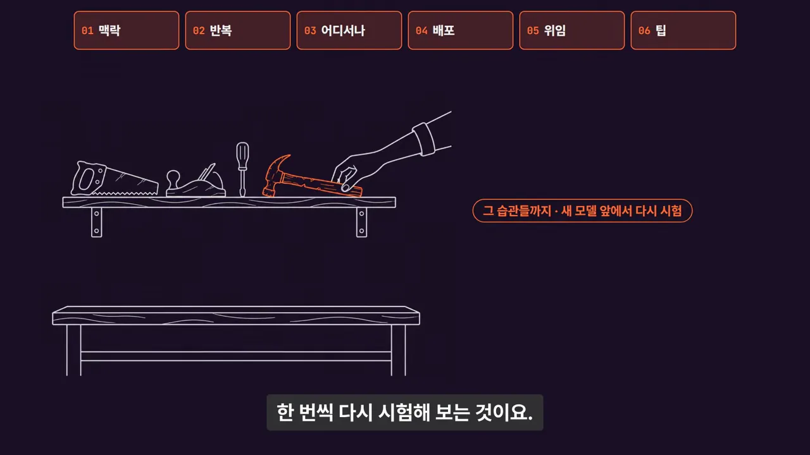